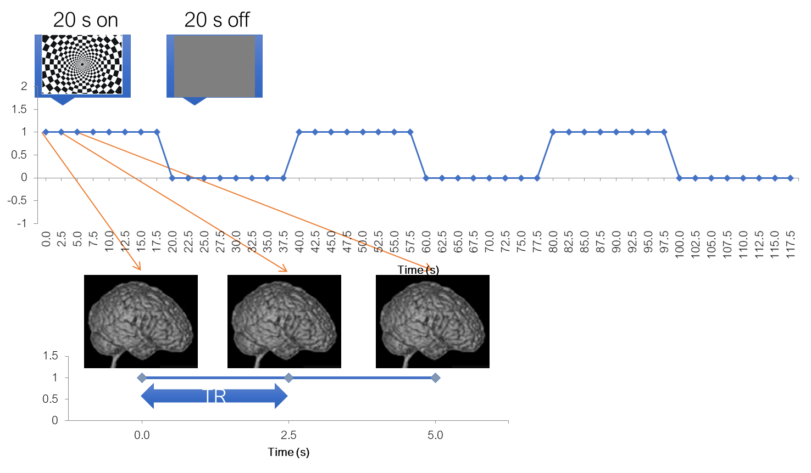
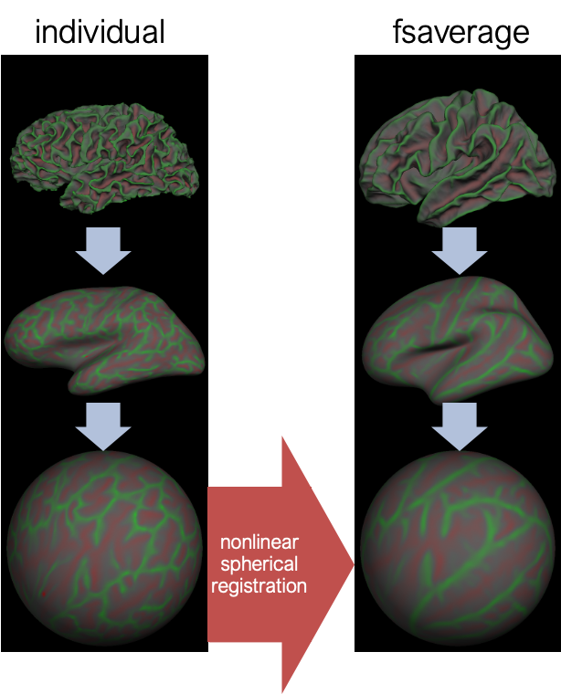

Warning: package 'ggplot2' was built under R version 4.4.34 Preprocessing
of an fMRI dataset
Preprocessing of fMRI data is intended for reducing the impact of MR artifacts and enhancing the data quality.
In principle, if the data quality is good and the subject did not move (which is the case for our experiment) preprocessing should not even be necessary. Nevertheless, this is a tradition that goes back to the 1990-es, and researchers mostly stick to it.
The maths behind these steps is oftentimes complicated, and most fMRI ‘users’ do not understand it. Our fMRI lab even offers to provide you with preprocessed data. I think it is important to know what you are doing, so we will go through basic preprocessing steps today.
Reminder: a typical experiment

To help us better understand the preprocessing steps, let’s remind ourselves about a typical fMRI experiment with a flickering checkerboard. In this experiment, we want to find out which brain areas are active when subjects view a flickering checkerboard compared to when they view a gray background. We have shown to every volunteer a checkerboard for e.g. 20 second interleaved with a 20 s rest, and we will measure a whole brain volume every 2 seconds, for e.g. to minutes or so.
Matlab code to generate stimulus, BOLD and shifted BOLD X = [1 1 1 1 1 1 1 1 0 0 0 0 0 0 0 0 1 1 1 1 1 1 1 1 0 0 0 0 0 0 0 0 1 1 1 1 1 1 1 1 0 0 0 0 0 0 0 0]; bf = spm_get_bf; % indicated a tr of 2.5 Y = conv(X,bf.bf); Ye = Y+randn(size(Y)).*0.2;
4D functional dataset

And, in a functional experiment we usually measure brain activity across the whole volume over extended perionds of time, so it is comfortable to think about each functional dataset that we acquire as a 4D dataset, which consists of 3D brain volumes and time as a 4th dimension.
Major software

Preprocessing used to be integrated into the software used for the actual analysis. And there are many software for this. On this slide I just put a few of them. Each of them has a slightly different phylosophy behind it, but all of them do roughly the same thing, so at the end it should not matter much which of them you use.
One of the oldest ones are:
SPM – statistical parameteric mapping from UCL. It is a free MATLAB-based toolbox. However, it depends on the MATLAB licence, and has not been updated for a long time. The new update just came out which spans the gab from 2012 to 2025 (Tierney et al. 2025).
AFNI - from NIH
FSL from Oxford – a set of linux tools, also free and independent of MATLAB, which is an advantage, but requires Linux.
FreeSurfer/FSFAST form the Martinos center - it is Linux based, and was originally conceived as a tool for structural data analysis, but has an fMRI module
Historical software
- broccolli, that can utilize GPU computing and can process the same dataset n times faster
With the awareness of open science, and with the trend towards reproducibility and transparency, and with the release of fMRIprep software, the preprocessing got detached from the actual data analysis.
fMRIprep

Image source (Esteban et al. 2018)
fMRIprep has evolved to combine best practices in fmri preprocessing and also to unify and standardize analysis steps. It is currently dominating the field and is the state-of-the-art way to do preprocessing.
All the steps we will talk about are implemented in fMRIprep.
Anatomical preprocessing
Bias field correction
# gambling: view the before and after images by typing
ml freesurfer
freeview \
/home/jovyan/gambling/bids/sub-001/ses-1/anat/sub-001_ses-1_acq-mprage_T1w.nii.gz \
/home/jovyan/gambling/bids/derivatives/fmriprep/sub-001/ses-1/anat/sub-001_ses-1_acq-mprage_desc-preproc_T1w.nii.gzVarying intensities across the image will confuse subsequent steps.
Surface reconstruction

# gambling: view the reconstructed surfaces by typing
ml freesurfer
freeview \
/home/jovyan/gambling/bids/derivatives/fmriprep/sourcedata/freesurfer/sub-001/mri/orig.mgz \
-f /home/jovyan/gambling/bids/derivatives/fmriprep/sourcedata/freesurfer/sub-001/surf/*h.white \
/home/jovyan/gambling/bids/derivatives/fmriprep/sourcedata/freesurfer/sub-001/surf/*h.pialRelatively lengthy (some hours) multistage fully automatic process
Normalization
Will be discussed in the section on functional data
Functional preprocessing
# gambling: compare before and after my typing
ml freesurfer
freeview \
/home/jovyan/gambling/bids/sub-001/ses-1/func/sub-001_ses-1_task-gambling_acq-Fs2_run-1_bold.nii.gz \
/home/jovyan/gambling/bids/derivatives/fmriprep/sub-001/ses-1/func/sub-001_ses-1_task-gambling_acq-Fs2_run-1_space-T1w_desc-preproc_bold.nii.gzAs I already mentioned, preprocessing is not strictly necessary, especially with modern 3 Tesla scanners and compliant subjects. It is more important for high-field scanners which contain stronger artifacts, subjects that move a lot, or in spatial scenarios where we want to detect small effects and do not want to make sure we get rid of noise as much as we can.
The curious among you can try performing statistics with and without preprocessing and compare as a bonus task.
Here are the examples of functional and anatomical data before and after preprocessing. Do we see any difference? Not always. Especially for the functional data, the differences are seen over time and not so much over space.
Non-steady-state artifacts
Aka T1 equilibration artifacts
# gambling
file:///home/jovyan/gambling/bids/derivatives/mriqc/sub-001/figures/sub-001_ses-1_task-gambling_acq-Fs2_run-1_desc-carpet_bold.svgI could not really spot this artifact in the scans we acquired to show you. This may be due to two facts:
Our scanner is quite good and modern, so these artifacts are minimal
The scanning protocol automatically acquires two volumes with those artifacts that are discarded
Perhaps these large intensity fluctuations on the left (in the beginning) in this carpet plot reflect this.
But non-steady-state artifacts are actually the reason why I asked to include a 10-second period where nothing is happening into the experimental paradigm. Non-steady-state volumes should not overlap with the actual experimental paradigm. In the past, we waited for 4-5 volumes before the actual paradigm started, and then discarded these volumes during preprocessing, so that data and paradigm are temporally aligned. But the non-steady-state volumes have an advantage of having good gray-white matter contrast. Therefore, fMRIprep tries to automatically identify them for each run and use them to produce a “reference scan”, which is used in the subsequent steps.
Motion correction
Purpose: compensate for subject movement
One of the first preprocessign steps is motion correction. Why do we need motion correction? During the fMRI experiment the subject is supposed to lay still inside the scanner, and they usually do so. However, even your best volunteer won’t be perfect. And in fMRI, even a few millimeters screw up your experiment. Here is an example. Let’s say we are measuring a voxel located on the left hemisphere, and the subject suddenly moved. As a result, the same voxel will be now recording activity from the empty space between the hemispheres, or even form the opposite hemisphere.
Motion correction
6 parameter “rigid body” transform
Usually, motion is much smaller, but we still want to correct it. How do we do this? Luckily there are special algorithms that can estimate the amount of motion from one volume to the next. This is usually done using 6 degrees of freedom: translation in x, y, and z and rotation in x, y, and z. This is called the “rigid body transform”, because you do not change the size and shape of the volume, but simply rotate it in space. After the amount of motion has been calculated, it can be applied to every image to align it back to the necessary position.
Plot motion parameters
Slice-time correction
Purpose: compensate for the lag in slice acquisition
The next preprocessing step is slice-time correction. What is slice time correction and why do we need it? Remember that typically a functional volume is acquired not all at once, but slice-by-slice, as illustrated here. There are different ways in which the scanner can acquire the slices: it can bie botton-to top (ascending), decending, interleaved. There are also more complex slice acquisition patterns. Remember that the time it takes to acquire one volume is relatively long, in this our example it is 2 seconds. Let’s say a stimulus activates two areas, here and here in the same manner. If we acquire the slices in an asciending manner, we will measure a small signal amplitude in the frist area. By the time we arrive to the second area, the signal amplitude will increase in both areas, so we will measure a highre signal amplitude in the second area.
Slice-time correction
Here is another way of illustrating the same issue. The purpose of the slice-time correction realigns signals from all slices in time as if they were acquired at the same time.
Mostly relevant for event-related designs or timing comparisons Can be substituted by modeling HRF derivatives if you are not interested in timing/time course analysis.
Slice time correction: before or after motion correction?
Simultaneous multislice (SMS)/multiband (MB) acquisitions
Susceptibility distortions

Image source: https://mriquestions.com/susceptibility-artifact.html
Field map
Reverse PE polarity
# gambling: to view these images, type in the terminal:
ml freesurfer
freeview \
/home/jovyan/gambling/bids/sub-001/ses-1/func/sub-001_ses-1_task-gambling_acq-Fs2_run-1_bold.nii.gz \
/home/jovyan/gambling/bids/sub-001/ses-1/fmap/sub-001_ses-1_acq-Fs2_dir-PA_epi.nii.gz \
-ras 3 61 28Apply the deformation field
file:///home/jovyan/gambling/bids/derivatives/fmriprep/sub-001.htmlHere you can see how e.g. the copmpressed inferior frontal lobe regions get unwarped (although lost signal can’t be recovered completely).
Co-registration


# gambling:
ml freesurfer
freeview '
/home/jovyan/gambling/bids/sub-001/ses-1/anat/sub-001_ses-1_acq-mprage_T1w.nii.gz \
/home/jovyan/gambling/bids/sub-001/ses-1/func/sub-001_ses-1_task-gambling_acq-Fs2_run-1_bold.nii.gzPurpose #1: view individual activation on a high quality anatomical image
Purpose #2: mapping to standard space (normalization)
Mutual information maximization
Code
# source: chatgpt
import numpy as np
import matplotlib.pyplot as plt
from scipy.ndimage import shift
from sklearn.metrics import mutual_info_score
def create_realistic_fish(size=100):
img = np.zeros((size, size))
cx, cy = size // 2, size // 2
# Draw backbone (slight curve)
for x in range(20, 80):
y = int(cy + 5 * np.sin((x - 20) / 60 * np.pi)) # slight wave
img[x, y] = 1
# Draw ribs (angled lines)
for x in range(25, 75, 5):
y = int(cy + 5 * np.sin((x - 20) / 60 * np.pi))
for dy in range(1, 8):
if 0 <= y - dy < size:
img[x, y - dy] = 1
if 0 <= y + dy < size:
img[x, y + dy] = 1
# Draw head (big circle)
for i in range(-10, 11):
for j in range(-10, 11):
if i**2 + j**2 < 100:
xi = 20 + i
yj = cy + j
if 0 <= xi < size and 0 <= yj < size:
img[xi, yj] = 1
# Draw eye (small dot)
img[17, cy + 5] = 0 # black eye (making a small black pixel inside head)
# Draw tail fin (V shape)
for d in range(10):
x1, y1 = 80 + d, cy - d
x2, y2 = 80 + d, cy + d
if 0 <= x1 < size and 0 <= y1 < size:
img[x1, y1] = 1
if 0 <= x2 < size and 0 <= y2 < size:
img[x2, y2] = 1
# Draw dorsal (top) fin
for d in range(10):
x, y = 40 - d//2, cy - 12 - d
if 0 <= x < size and 0 <= y < size:
img[x, y] = 1
# Draw ventral (bottom) fin
for d in range(10):
x, y = 60 + d//2, cy - 12 - d
if 0 <= x < size and 0 <= y < size:
img[x, y] = 1
return img
# Create fixed image (realistic fish skeleton)
fixed = create_realistic_fish()
# Create moving image with inverted contrast
moving = 1 - fixed
# Introduce a misalignment
def shift_image(img, dx, dy):
return shift(img, shift=(dx, dy), mode='constant', cval=0)
moving_misaligned = shift_image(moving, 4, 5)
# Define mutual information computation
def compute_mi(img1, img2, bins=32):
img1_flat = img1.ravel()
img2_flat = img2.ravel()
c_xy = np.histogram2d(img1_flat, img2_flat, bins=bins)[0]
mi = mutual_info_score(None, None, contingency=c_xy)
return mi
# Search for best alignment by shifting
dx_range = np.arange(-10, 11)
dy_range = np.arange(-10, 11)
mi_matrix = np.zeros((len(dx_range), len(dy_range)))
for i, dx in enumerate(dx_range):
for j, dy in enumerate(dy_range):
shifted = shift_image(moving_misaligned, dx, dy)
mi_matrix[i, j] = compute_mi(fixed, shifted)
# Find best shift
best_idx = np.unravel_index(np.argmax(mi_matrix), mi_matrix.shape)
best_dx = dx_range[best_idx[0]]
best_dy = dy_range[best_idx[1]]
print(f"Best shift: dx = {best_dx}, dy = {best_dy}")
# Apply best shift
moving_corrected = shift_image(moving_misaligned, best_dx, best_dy)
# Plot
fig, axs = plt.subplots(2, 2, figsize=(10,10))
axs[0,0].imshow(fixed, cmap='gray')
axs[0,0].set_title('Fixed Image (Realistic Fish Skeleton)')
axs[0,1].imshow(moving_misaligned, cmap='gray')
axs[0,1].set_title('Moving Misaligned Image')
axs[1,0].imshow(moving_corrected, cmap='gray')
axs[1,0].set_title('Moving Corrected Image')
cax = axs[1,1].imshow(mi_matrix, extent=[dy_range[0], dy_range[-1], dx_range[-1], dx_range[0]], cmap='viridis')
axs[1,1].set_title('Mutual Information Map')
axs[1,1].set_xlabel('dy')
axs[1,1].set_ylabel('dx')
fig.colorbar(cax, ax=axs[1,1])
plt.tight_layout()
plt.show()Boundary-based registration
Currently considered best for its purpose and is implemented in fMRIprep. Requires surface reconstruction of the anatomical scan.
Coregistration result
# gambling:
file:///home/jovyan/gambling/bids/derivatives/fmriprep/sub-001.htmlCorgistration before vs. after

# gambling:
ml freesurfer
freeview \
/home/jovyan/gambling/bids/sub-001/ses-1/anat/sub-001_ses-1_acq-mprage_T1w.nii.gz \
/home/jovyan/gambling/bids/sub-001/ses-1/func/sub-001_ses-1_task-gambling_acq-Fs2_run-1_bold.nii.gz \
/home/jovyan/gambling/bids/derivatives/fmriprep/sub-001/ses-1/func/sub-001_ses-1_task-gambling_acq-Fs2_run-1_space-T1w_desc-preproc_bold.nii.gzNormalization to template space
Finally, if you are preforming a group study, you also need to map each individual subject into some common space. This is not a trivial task. As head shpaes of people are different, there brain shapes are also different. Here I tried to draw the approximate shape if each of these guy’s brains, and some hypothetical template brain.
Normalization is needed to compensate for individual differences in brain shape for the group analysis.
Talairach atlas
Image source: Talairach and Tourneux, 1988 (to be confirmed)
Normalization is also needed for a unified coordinate system. You will see that standard coordinates are reported in the articles.
MNI tamplate
Further reading: https://imaging.mrc-cbu.cam.ac.uk/imaging/MniTalairach
Mapping to template
To match each of them to the template, it is not enough to coregister them as we did for motion correction, because obviously they are of different sizes. We can add 6 more paraeters to the transform, which compensates does scaling and shearing, to better align them. However, there will still be places wehere they do not align perfectly, because one guy one has a bigger frontal lobe, and gy to a bigger parietal lobe
Nonlinear transform
So some software packages use a nonlinear warping algorithm to align brains. There you have to estimate a 3D deformation field and then nonlinearly warp each brain onto a template. They are called non-linear, because different parts of the volume are scaled differently.
Normalization is done using a structural scan
The mapping to common space is usually done via an anatomical scan. First, each subject functional and anatomical scans are coregistered with each other, and then each subject’s anatomical scan is mapped into a template. This is done because the anatomical scan has better quality, and hence the estimated transform is more precise. After you have done that each area in one subject corresponds to the same area in the other subject and you can perform averaging on them.
Volume-based normalization
Unified segmentation
Unified segmentation is still the best algorithm. It performs bias correction, tissue segmentation and normalization in one step.
Surface-based registration

Fsaverage: 40 subjects; Align 39 subjects to 1; create an atlas; align 40 subjects to an atlas; re-create atlas; align 40 subject to the atlas; re-create atlas.
Using knolwdge from freesurfer recon, each voxel together with it’s time course is maped to one of the 3 atlas spaces: either the left cortical hemisphere, the right hemisphere or the subcrotical structures like the basal ganglia, amygldala, brainstem, etc. And the atlas spaces in this case are fsaverage. After this, the spatial smoothing is done either in 2D or in 3D depending on whether it is a surface space or a volume subcortical space, and voxels that do not belong to the space is being basked out.
Spatial smoothing
Finally, each volume is typically smoothed with a gaussian to increase the signal and supress noise. The amount of smoothing is usally expressed by the shape of the gaussian, which, in turn, is described by it’s full withd at half maximum. Here are the examples of the original volume, the smoothed volume at 5 fwhm and 10 fwhm. You can see that the signal increase happens at the expense of the spatial resolution.
Full width at half maximum
Code
# Load library
library(ggplot2)
# Define Gaussian function
gaussian <- function(x, mu = 0, sigma = 1) {
(1 / (sigma * sqrt(2 * pi))) * exp(- (x - mu)^2 / (2 * sigma^2))
}
# Create data
x <- seq(-5, 5, length.out = 1000)
y <- gaussian(x, mu = 0, sigma = 1)
# Find half maximum
ymax <- max(y)
half_max <- ymax / 2
# Solve for FWHM points
left_idx <- which(y >= half_max)[1]
right_idx <- tail(which(y >= half_max), 1)
x_left <- x[left_idx]
x_right <- x[right_idx]
fwhm_value <- x_right - x_left
# Create data frame
data <- data.frame(x = x, y = y)
# Plot
ggplot(data, aes(x, y)) +
geom_line(color = "blue", size = 1) +
geom_hline(yintercept = half_max, linetype = "dashed", color = "red") +
geom_vline(xintercept = c(x_left, x_right), linetype = "dotted", color = "darkgreen") +
annotate("text", x = 0, y = half_max + 0.02, label = "Half Maximum", color = "red") +
annotate("text", x = x_left - 0.3, y = 0.1, label = sprintf("%.2f", x_left), color = "darkgreen") +
annotate("text", x = x_right + 0.3, y = 0.1, label = sprintf("%.2f", x_right), color = "darkgreen") +
annotate("text", x = 0, y = 0.15, label = paste("FWHM =", round(fwhm_value, 2)), color = "black", size = 5) +
theme_minimal() +
labs(title = "Gaussian Curve with FWHM",
x = "x",
y = "Amplitude")Warning: Using `size` aesthetic for lines was deprecated in ggplot2 3.4.0.
ℹ Please use `linewidth` instead.Spatial smoothing
Purpose1: increase the signal and suppress the noise
Purpose2: even better compensate for inter-individual differences
FMRIprep does not smooth the data
Critique
Volume smoothing has been heavily criticized by some influential people in the field. It has even been called “deficient approaches to human neuroimaging”. Because it does not only degrade the resolution, but also decreases the effect size. But it is still being done in many cases – it all depends on the questions you are asking
Surface-based smoothing
slide courtesy of Doug Greve
5 mm apart in 3D
25 mm apart on surface
Averaging with other tissue types (WM, CSF)
Averaging with other functional areas
One important feature is that fsfast allows surface-based processing, and therefore overcomes some of the difficulties caused by smoothing.
Here is an example of how it works. Here is a piece of freesrurfer reconstructed cortical surface with yellow a white matter surface and red the the gray matter surface. The two points, on opposite banks of the sulcus, are only 5 mm apart in the volume, however, they are very far from each other on the surface. So these two points can be two completely different functional areas. However, if you smooth on the volume, as shown here, you will mix them together. Surface smoothing routines use the information from the freesurfer’s surface reconstruction and smoothe the data along the cortical surface. This allows to take advantage of smoothing procedure without mixing these two areas together.
fMRIprep
Pros
- Useful for processing many subjects, whole-brain data, standard acquisition protocols
- Collection of best practices from all software
- HPC compatibility
- Useful for “users” when knowledgeable people assist them
- Automatic quality control
- Increases reproducibility (?)
Cons
- Difficult/impossible to use for custom acquisitions
- Difficult/impossible to manually intervene
- May not be worth it with few subjects are being processed
- Requires a Linux environment and corresponding knowledge
- Need integration with the software you will use for your analysis
- Hard to explain what you did (black box)
Example I
Example II
Run fMRIprep
Before running
Apply for a freesurfer license file: https://surfer.nmr.mgh.harvard.edu/registration.html
Download it and store in /home/jovyan/license.txt (or wherever you like)
Run fMRIprep as follows
# create freesurfer subject directory
mkdir -p /home/jovyan/gambling/bids/derivatives/fmriprep/sourcedata/freesurfer/
# define the path to the freesurfer subject directory
SUBJECTS_DIR=/home/jovyan/gambling/bids/derivatives/fmriprep/sourcedata/freesurfer/
# run fMRIprep with 4 output spaces: T1 native, MNI, fsnative, fsaverage
fmriprep /home/jovyan/gambling/bids/ /home/jovyan/gambling/bids/derivatives/fmriprep/ \
participant \
--fs-license-file /home/jovyan/license.txt \
--output-spaces T1w MNI152NLin2009cAsym fsnative fsaverage After this, we need to wait for some ˜ 3-4 hours, while magic happens.
References
Arsenovic, Ana, Anja Ischebeck, and Natalia Zaretskaya. 2022. “Dissociation Between Attention-Dependent and Spatially Specific Illusory Shape Responses Within the Topographic Areas of the Posterior Parietal Cortex.” The Journal of Neuroscience, September. https://doi.org/10.1523/JNEUROSCI.0723-22.2022.
Ashburner, John, and Karl J Friston. 2005. “Unified Segmentation.” NeuroImage 26 (3): 839–51. https://doi.org/10.1016/j.neuroimage.2005.02.018.
Coates, Adam, David Linhardt, Christian Windischberger, Anja Ischebeck, and Natalia Zaretskaya. 2024. “High-Resolution 7T fMRI Reveals the Visual Zone of the Human Claustrum.” Imaging Neuroscience 2 (October): 1–15. https://doi.org/10.1162/imag_a_00327.
Esteban, Oscar, Christopher J. Markiewicz, Ross W. Blair, Craig A. Moodie, A. Ilkay Isik, Asier Erramuzpe, James D. Kent, et al. 2018. “fMRIPrep: A Robust Preprocessing Pipeline for Functional MRI.” Nature Methods 16 (1): 111–16. https://doi.org/10.1038/s41592-018-0235-4.
Greve, Douglas N., and Bruce Fischl. 2009. “Accurate and Robust Brain Image Alignment Using Boundary-Based Registration.” NeuroImage 48 (1): 63–72. https://doi.org/10.1016/j.neuroimage.2009.06.060.
Stelzer, Johannes, Gabriele Lohmann, Karsten Mueller, Tilo Buschmann, and Robert Turner. 2014. “Deficient Approaches to Human Neuroimaging.” Frontiers in Human Neuroscience 8 (July). https://doi.org/10.3389/fnhum.2014.00462.
Tierney, Tim M., Nicholas A. Alexander, Nicole Labra Avila, Yael Balbastre, Gareth Barnes, Yulia Bezsudnova, Mikael Brudfors, et al. 2025. “SPM 25: Open Source Neuroimaging Analysis Software.” https://doi.org/10.48550/ARXIV.2501.12081.